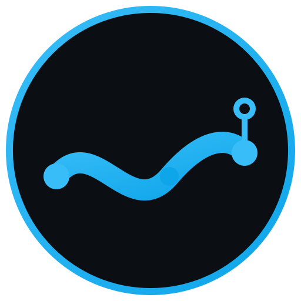
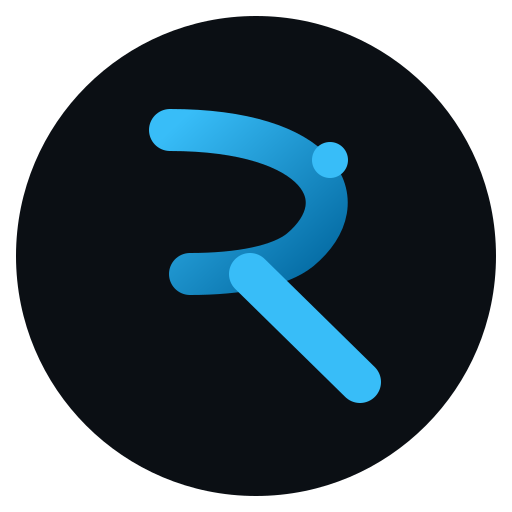
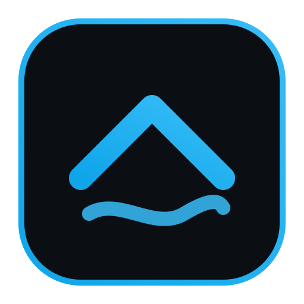

Onda do rio com nodes de circuito — a união literal de rio + tecnologia. Onda fluida, remete a "fluxo".

Letra R cuja barriga é uma curva de rio, com node de conexão. Mais "marca registrada", funciona pequeno (favicon, app).

Seta pra cima (seu negócio APARECER) sobre a onda do rio. Mais corporativo, comunica crescimento.